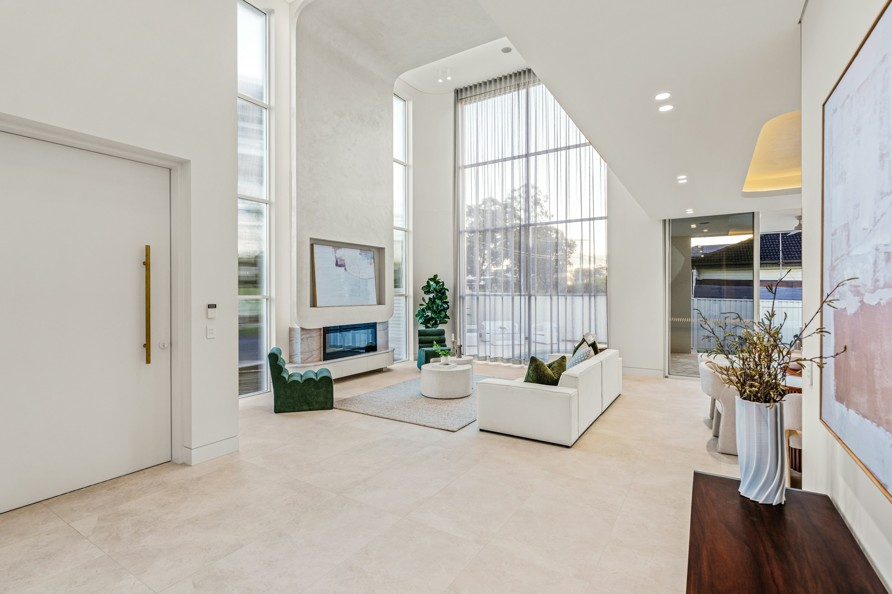
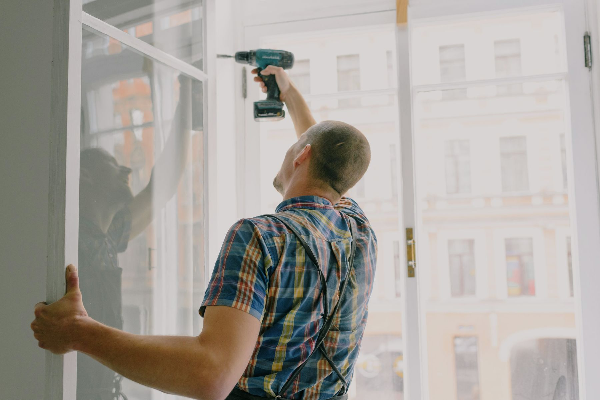
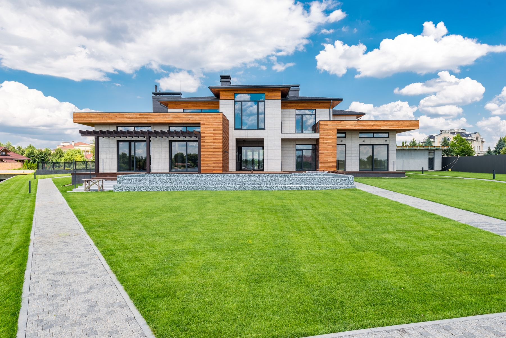
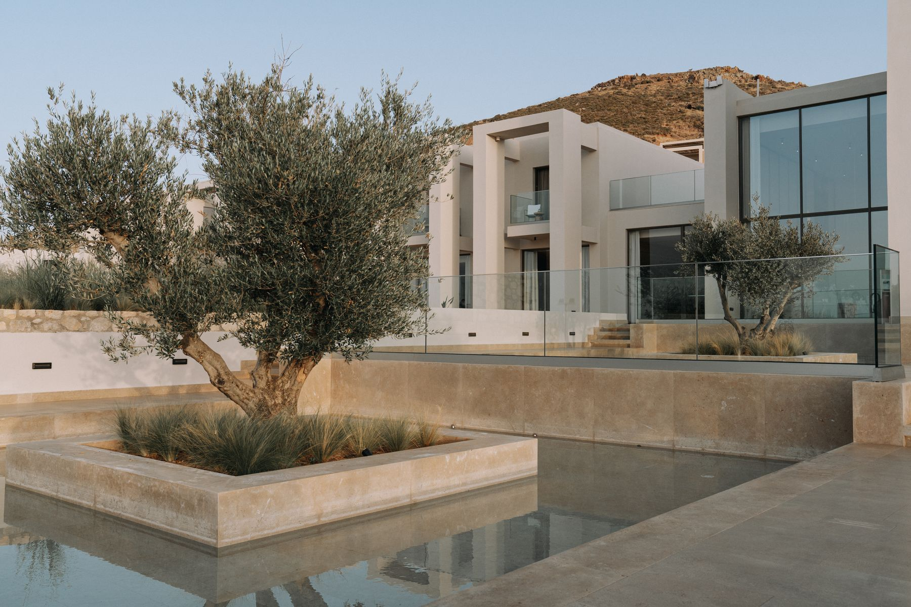
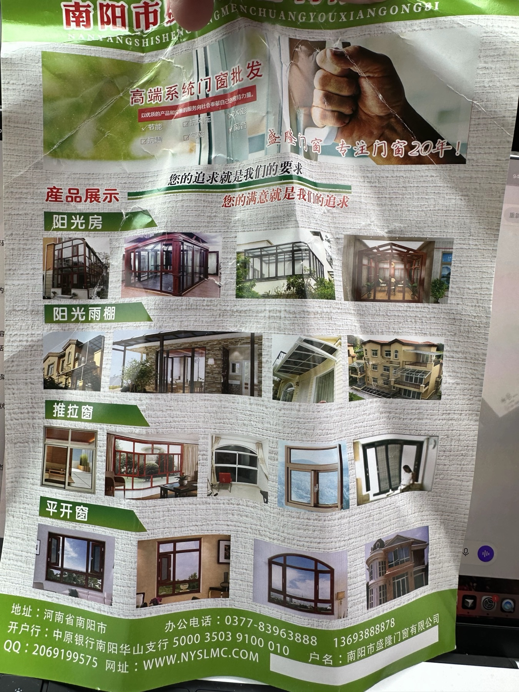

断桥铝系统门窗
平开、推拉、内开内倒等多种开启方式，兼顾隔音、保温、密封与耐用。
先解决问题，再选择产品
新房选窗看性能，老房换窗看现场。盛隆根据房屋结构、朝向、楼层和使用习惯，给出匹配的门窗方案；能维修的不急着换，需要升级的把原因说清楚。
常见原因不只是密封条老化，也可能是窗框变形、五金锁点不足或安装缝隙处理不当。
产品与服务
覆盖新装、换新、局部升级与特殊定制，让门窗性能、建筑外观和日常使用真正匹配。
平开、推拉、内开内倒等多种开启方式，兼顾隔音、保温、密封与耐用。
根据屋面排水、承重、遮阳和通风条件，定制安全、明亮、好维护的空间。
上门勘察原窗和墙体，控制拆装影响，处理旧框、收口、防水与垃圾清运细节。
电动开窗、风雨感应、遥控联动等升级，让高窗、大窗和特殊空间更方便使用。
结合中式窗棂、拱形与异形洞口进行设计，在现代性能与建筑气质之间取得平衡。
漏风、渗水、异响、玻璃起雾、五金失灵、窗扇下坠，先查原因再给处理建议。
把性能做在看不见的地方
根据尺寸、开启方式和风压条件选择型材结构，不只看壁厚和系列数字。
可配置中空玻璃、安全钢化玻璃等方案，具体以现场与使用需求为准。
锁点、执手、合页与窗型匹配，并在安装后完成调试与使用交底。
重视水平垂直、固定连接、填缝密封与室内外收口，减少后期隐患。
场景案例
我们用典型改造场景，把客户最关心的问题、设计重点和建议配置讲清楚。正式方案仍以现场测量为准。

住宅门窗针对大面积玻璃与高窗，综合考虑玻璃安全、分格比例、开启位置、通风和日常清洁。
 阳光房
阳光房从屋面坡度、排水路径到可开启扇、遮阳方式，避免建成以后夏季闷热、雨天担心。

旧房改造先判断旧框能否保留，再核对墙体、窗台与外墙胶缝，减少拆装对室内生活的影响。

住宅门窗根据装修风格、采光朝向和使用习惯确定颜色、分格、纱窗与开启方式。
 仿古定制
仿古定制从窗棂比例、颜色和建筑立面出发，协调传统造型与现代门窗的耐用和维护。

自建房整体从建筑外观、房间功能和朝向出发，统一门窗颜色、玻璃分格、开启扇和纱窗配置。
旧窗焕新与智能升级
针对新老小区，先判断保留、维修还是更换，再结合预算安排优先级。
检查窗扇搭接、密封条、锁点与玻璃配置，针对临街、风口或高层住宅制定方案。
处理窗扇下坠、锁闭不严、执手松动，也可根据空间条件调整开启逻辑。
适用于高位窗、阳光房和通风不便区域，可评估遥控、定时或风雨感应。
从外侧胶缝、排水通道、框墙连接与窗台坡度排查，避免只在表面重复打胶。
服务流程
我们把门窗服务拆成可确认的步骤，让尺寸、配置、价格和工期在施工前尽量说清。
说明房屋位置、窗型、问题与大致需求。
查看洞口、墙体、渗水点、开启条件与施工环境。
确认型材、玻璃、五金、颜色、工艺与费用范围。
按确认尺寸制作，进场安装并做好成品保护。
检查启闭、密封与收口，交代使用和维护事项。

从阳光房、采光雨棚到推拉窗、平开窗，早期宣传资料记录了盛隆长期扎根门窗行业的产品积累。
关于盛隆
南阳市盛隆门窗有限公司立足南阳，服务家庭、商铺与工程客户。我们从常规铝合金门窗起步，逐步拓展到断桥铝系统门窗、阳光房、旧窗改造、智能升级、仿古窗和疑难问题处理。
门窗没有脱离现场的标准答案。盛隆更看重测量、判断和落地：房屋朝向怎样、墙体是什么情况、客户最想解决哪个问题，再决定产品和工艺。
典型客户反馈
客户通常不只关心参数，更关心噪音有没有变小、下雨还漏不漏、窗户开关是否省力，以及出现问题能不能及时找到人。
老房子临街，师傅先看墙体和旧框，再讲怎么换，没有一上来就推荐最贵的。
阳光房最担心漏水，他们把坡度、排水和胶缝怎么处理都提前说清楚了。
原以为要整套换，最后调了五金、换了密封条，窗户就顺了，费用也更合适。
以上为常见服务场景整理的体验表达，正式上线时建议替换为获得客户授权的真实评价。
常见问题
价格和工期都与尺寸、配置和现场条件有关，电话沟通可以先判断大致方向。